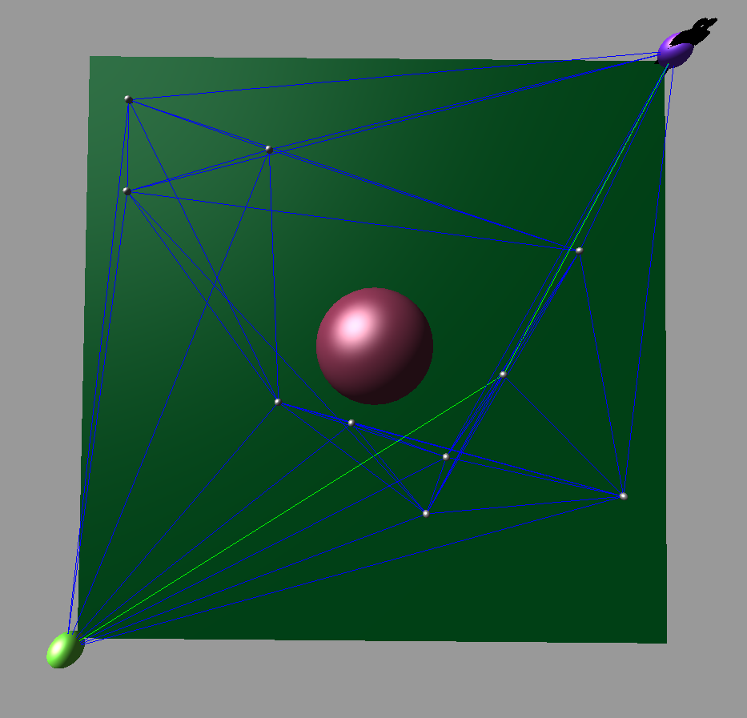

Jackson Kruger and Kieran Lieberg
The final submission was done in the form of a google site: https://sites.google.com/umn.edu/motion-planning/home
The following video demonstrates our work for the HW3 checkin:
The video above was simply using a greedy-first search. The (more recent) images below use A*.

Source code can be found on GitHub
The views and opinions expressed in this page are strictly those of the page author.
The contents of this page have not been reviewed or approved by the University of Minnesota.